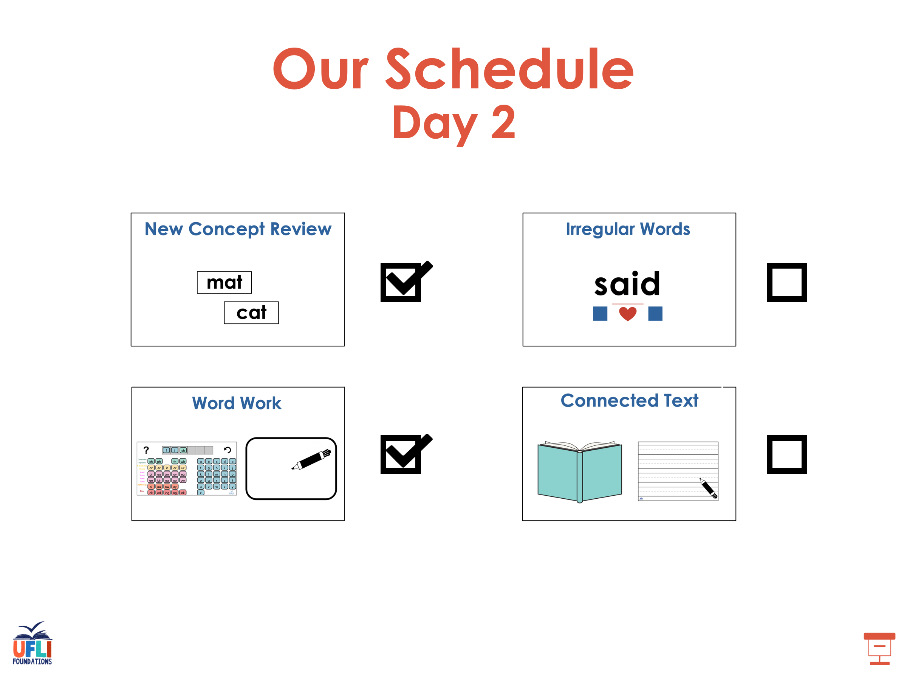
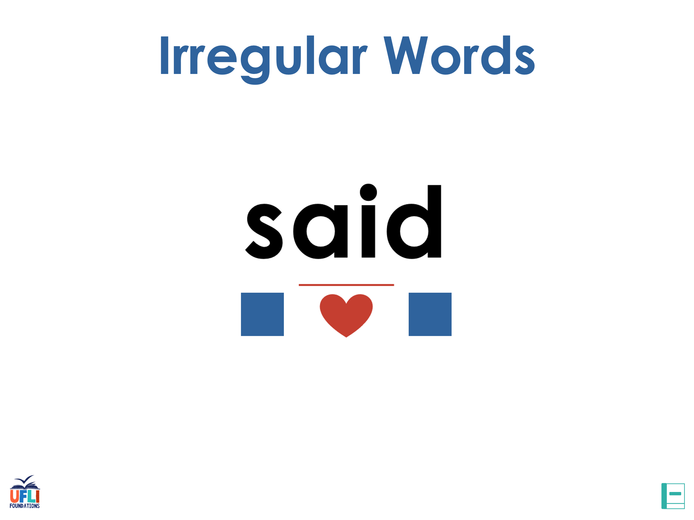
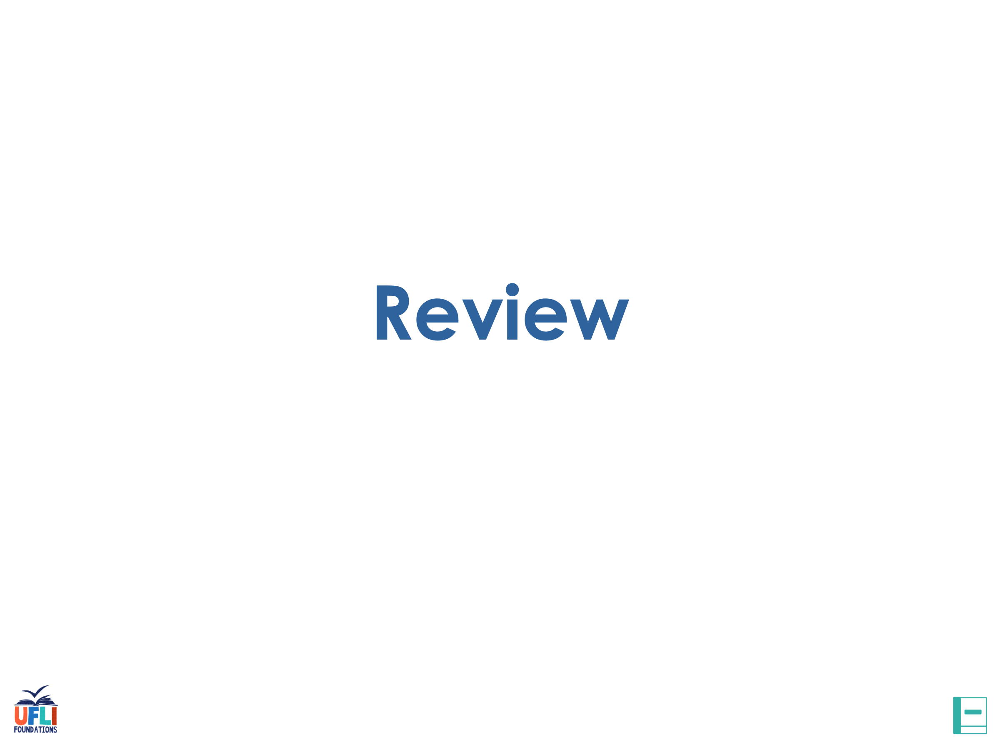
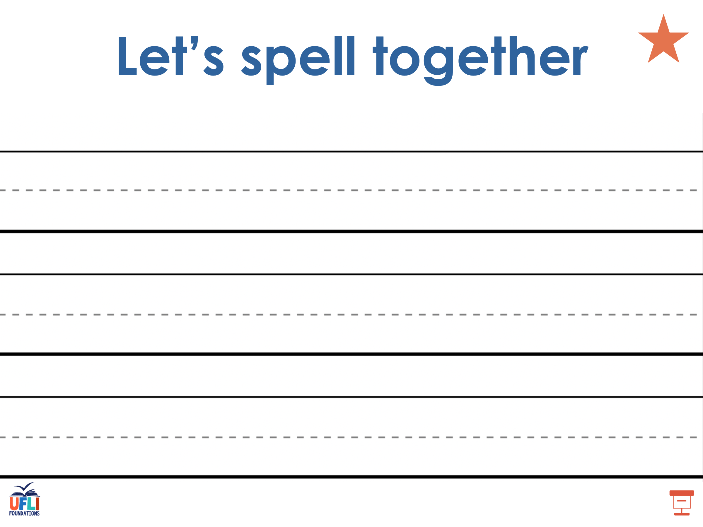
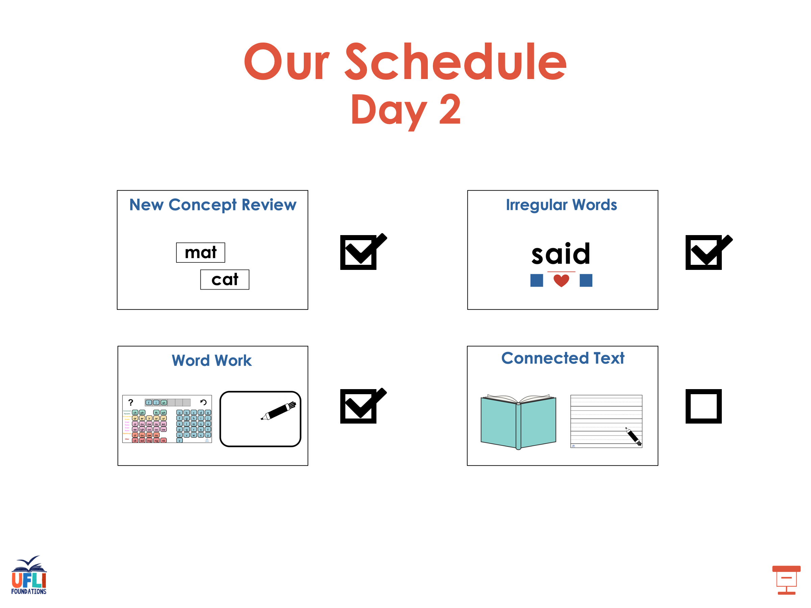
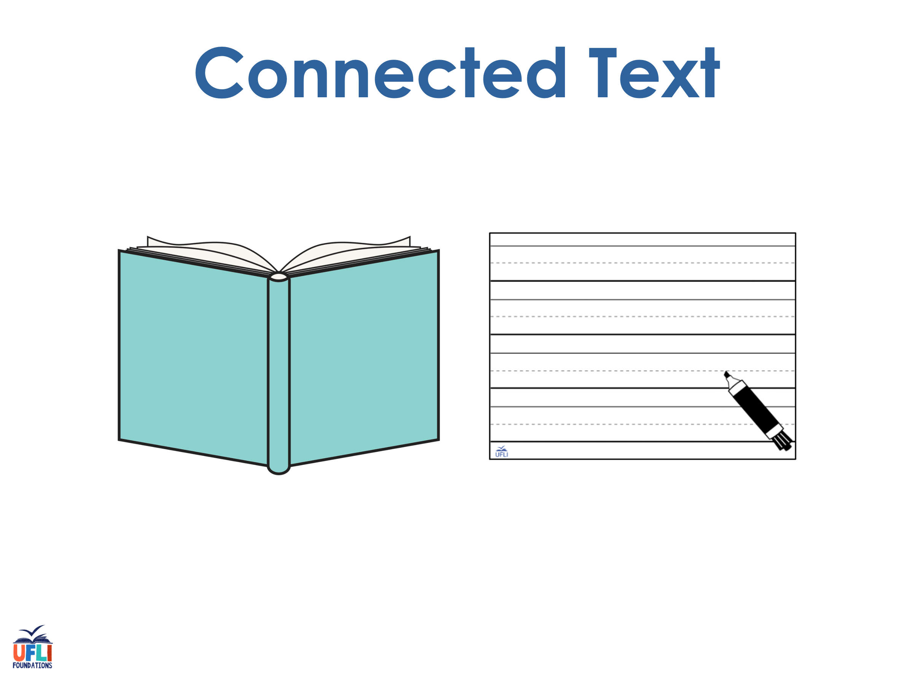
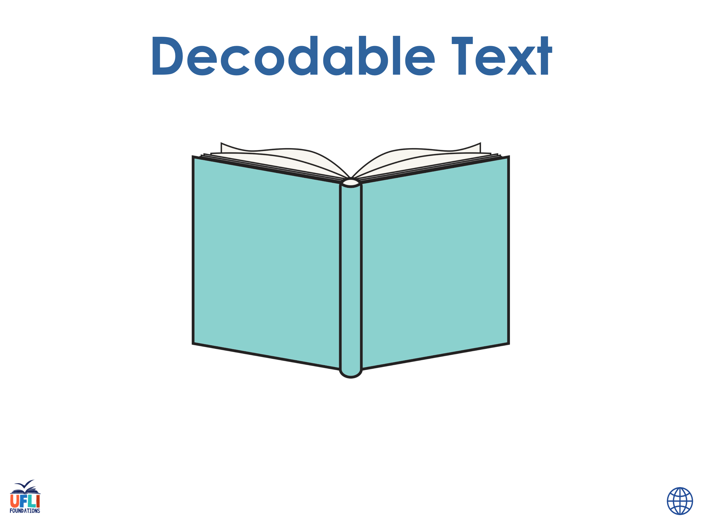
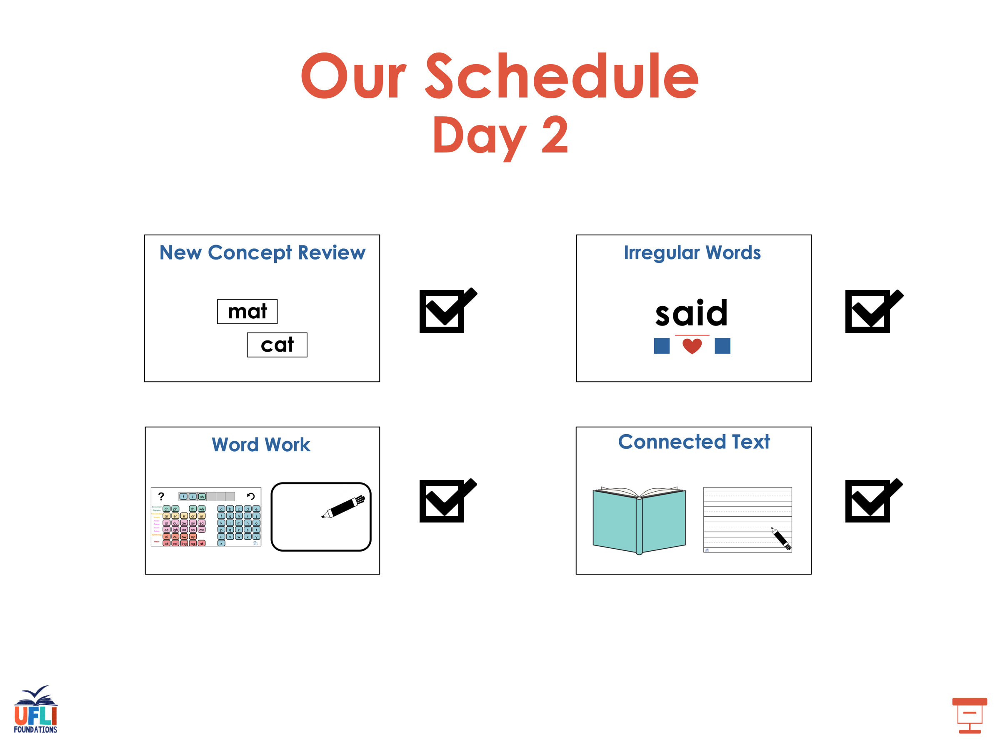

Step 6 · 6 minutes · alternate: "Change X to Y" (spell) and "What word is it now?" (read) · → or click a word = next word · ← = back · A = show all · R = reset


See UFLI Foundations lesson plan Step 7 for irregular word activities.
The white rectangle under each word may be used in editing mode. Cover the heart and square icons then reveal them one at a time during instruction.

See UFLI Foundations manual for more information about reviewing irregular words.
February
Lesson 95+
AR represents the /air/ sound.
In some dialects, the R is silent, and U may be pronounced /yū/ or /ŭ/
The white rectangle under the word may be used in editing mode. Cover the heart and square icons then reveal them one at a time during instruction.
eye
Lesson 96+
EYE represents the /ī/ sound.
The white rectangle under the word may be used in editing mode. Cover the heart and square icons then reveal them one at a time during instruction.
heart
Lesson 96+
EAR represents the /ar/ sound.
The white rectangle under the word may be used in editing mode. Cover the heart and square icons then reveal them one at a time during instruction.
our
Lesson 96+
R represents the /ə/
The white rectangle under the word may be used in editing mode. Cover the heart and square icons then reveal them one at a time during instruction.
Handwriting paper for irregular word spelling practice. Use as needed.
See UFLI Foundations manual for more information about reviewing irregular words.
Teach
The orange star indicates these are new irregular words that need to be introduced.
See UFLI Foundations manual for more information about teaching irregular words.
about
Lesson 98+
A represents the /ə/ or the /ŭ/ sound, depending on stress.
The white rectangle under the word may be used in editing mode. Cover the heart and square icons then reveal them one at a time during instruction.

Handwriting paper for irregular word spelling practice. Use as needed.
See UFLI Foundations manual for more information about teaching irregular words.


See UFLI Foundations lesson plan Step 8 for connected text activities.
Grandma knits for about twenty minutes each night.
Please clean up your crumbs after you eat.
I know how to wrap gifts very well.
See UFLI Foundations lesson plan Step 8 for sentences to write.
HELPER · 도우미
Spell a sentence
Teacher dictates; student repeats, then writes. Check with CAPS: Capitals · Appearance · Punctuation · Spelling.
Grandma knits for about twenty minutes each night.
Please clean up your crumbs after you eat.
I know how to wrap gifts very well.
Step 8 · 6-8 minutes · 🔊 = listen without revealing · → = reveal next · click a revealed sentence = read it aloud · S = read · A = all · R = reset

The UFLI Foundations decodable text is provided here. See UFLI Foundations decodable text guide for additional text options.
Birdwatching
With her notebook in hand, Cassie walked into the forest ready to study some birds. She loved birdwatching, and she had a knack for finding birds in new places. As she walked, she wrote down the names of the different birds she saw. She would even sketch a drawing of each bird in her notebook.
About one hour into her hike, Cassie knelt to rest and eat a snack. As she ate, large crumbs fell to the ground. Snap! Cassie heard a noise very close to her. When she turned around, she
saw a small brown bird pecking at her leftover crumbs.
It was a wren! Cassie had never seen a wren in real life, but she knows about them from reading her books.
Cassie knows that wrens have short wings and hold their tails upright. Wrens are also known for singing loud, complex songs. This little wren seemed to love Cassie’s snack.
When all the crumbs were gone, the wren lifted its wings. Cassie watched it fly away into the forest. Cassie was so thrilled with her wren sighting that she sang a long tune all the way home.

Insert brief reinforcement activity and/or transition to next part of reading block.
Keyboard shortcuts · 키보드 단축키 →Space next (reveals hidden items first) · 다음 화면 ← previous · 이전 화면 ↓/↑ skip whole slide F fullscreen · 전체화면 N teacher notes panel · 교사 노트 M step menu · 단계 메뉴 S read the word/sentence aloud · 소리 듣기 E grapheme examples popup · 예시 단어 D Details mode on/off · 자세히 모드 (→ shows example words on grapheme cards; auditory drill goes grapheme by grapheme with words) H hint: how many sounds · 힌트 A reveal all on this slide · 모두 보이기 R reset slide · 초기화 G go to slide number Home/End first/last slide Esc close panels ? this help Click the right side of a slide = next, left edge = previous. Click a word to hear it, click a grapheme card for example words.